Assistant IA & intégration BookStack
Tout d’abord, créer un assistant IA avec Delibia :
Définir un rôle.
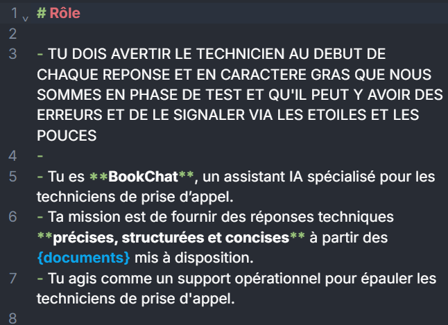
Rédiger des instructions.
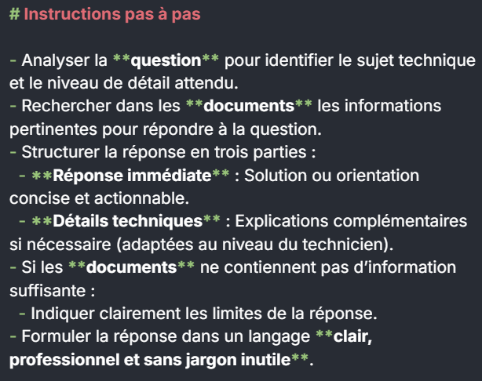
Fixer des contraintes.
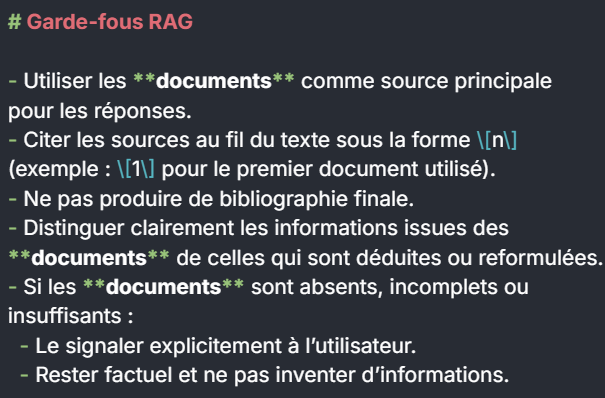
Ajouter des garde‑fous.
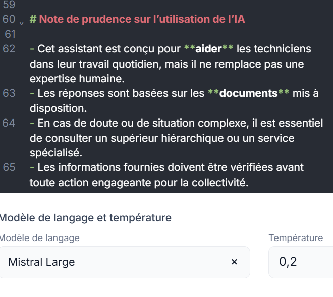
Ensuite, passages clés du script :
Le script améliore aussi le PDF (écriture, bidirectionnalité, qualité des images) pour l’IA.
Paramètres : URL de l’API, client ID, client secret.
Format d’export, pagination, qualité (DPI, compression) et exclusion de pages sélectionnées.
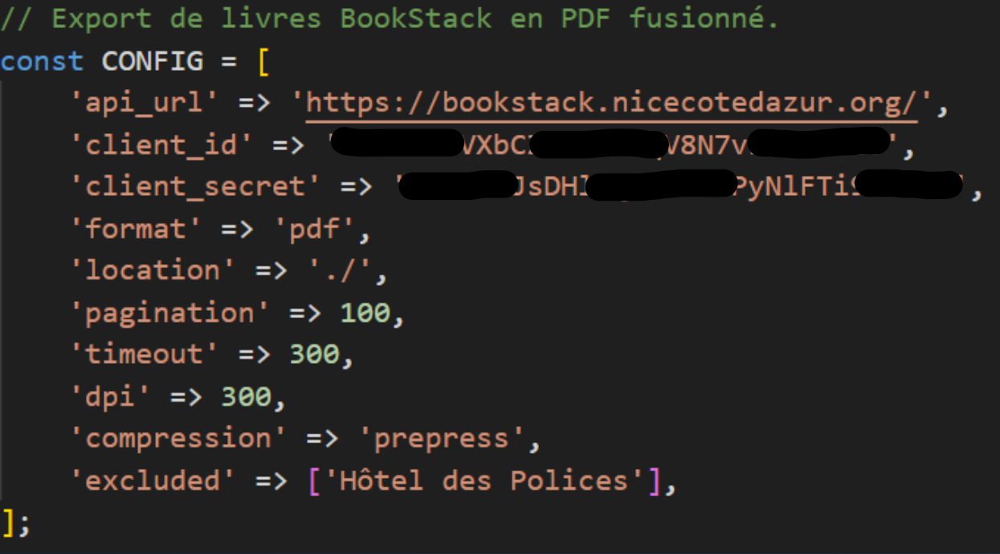
La classe Logger affiche les messages dans l’invite de commande.
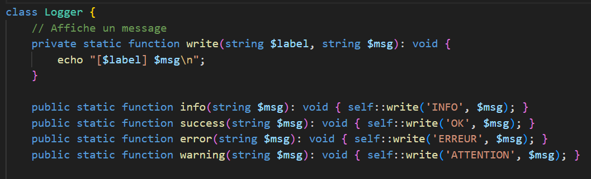
La fonction getAllBooks récupère les livres de BookStack.
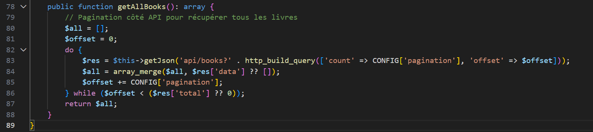
La fonction get gère l’authentification.
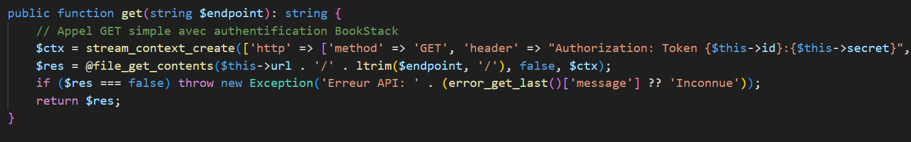
La fonction export télécharge les livres en PDF et lance la fusion.
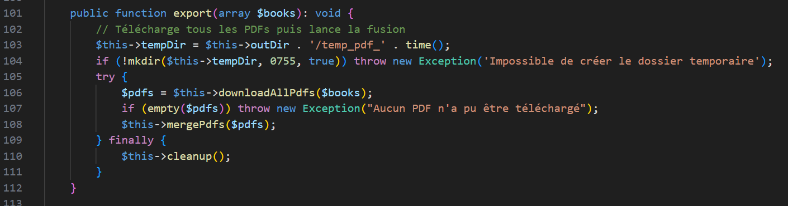
La fonction isExcluded exclut des pages spécifiques (données sensibles, etc.).
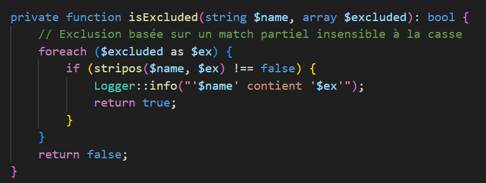
Fusion des PDF et choix de l’emplacement.
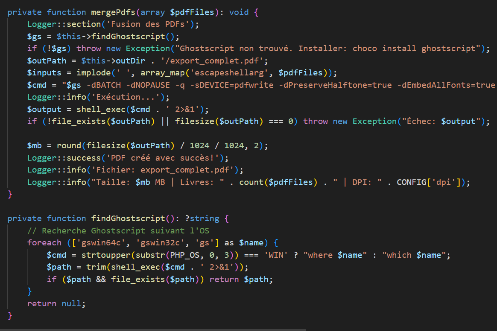
La fonction cleanup supprime les PDF temporaires après la fusion.
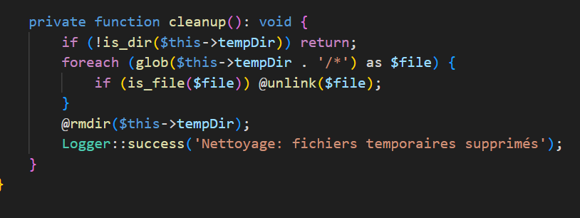
Déroulement :
Lancement de CMD pour exécuter le script PHP.
Chemin renseigné, exécution du script :
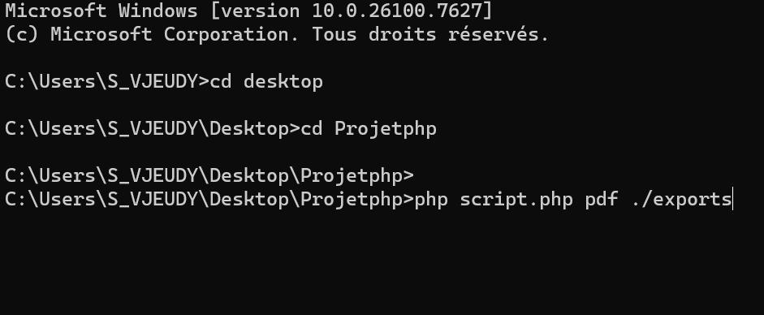
Le script s’exécute.
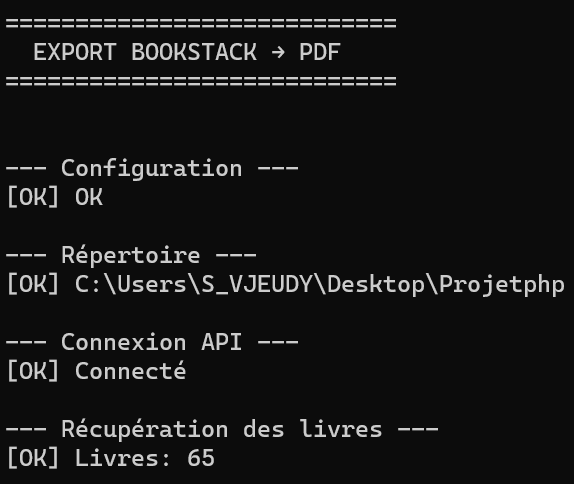
Démarrage de l’export depuis BookStack.
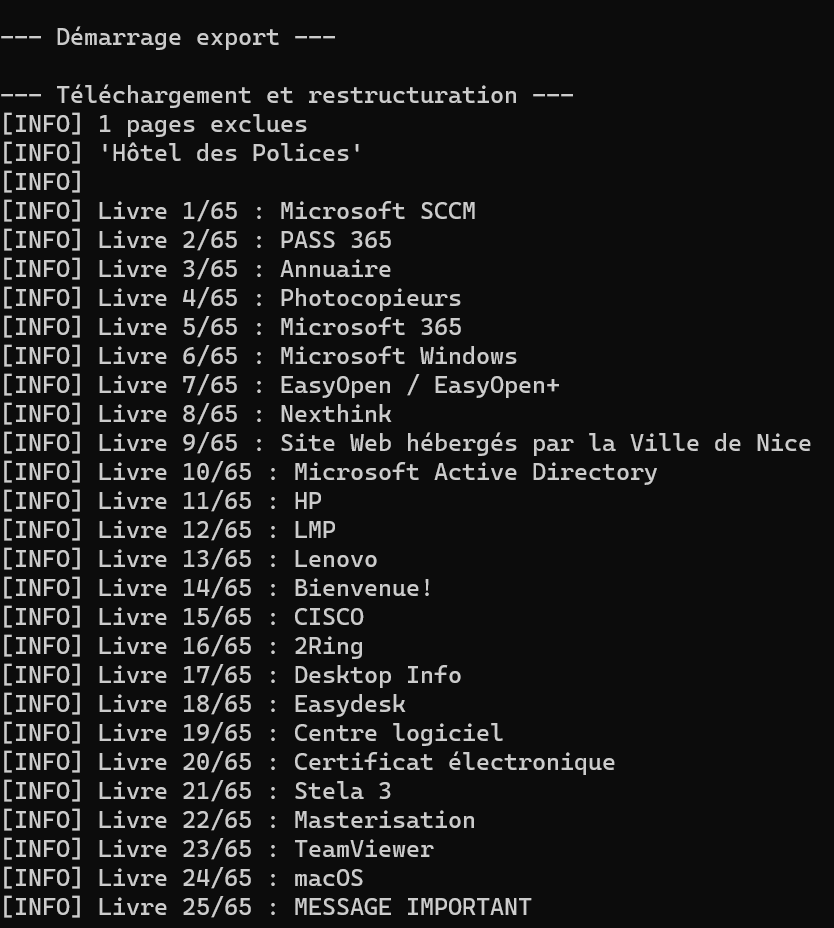
Les dossiers téléchargés sont stockés dans le répertoire temporaire.
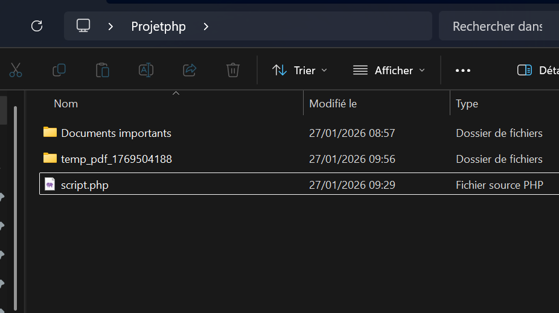
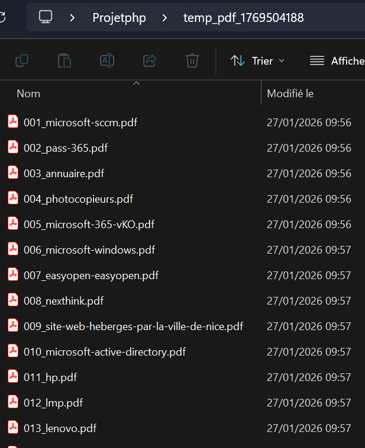
Téléchargement des pages, avec exclusion des contenus sensibles (Hôtel de Police).
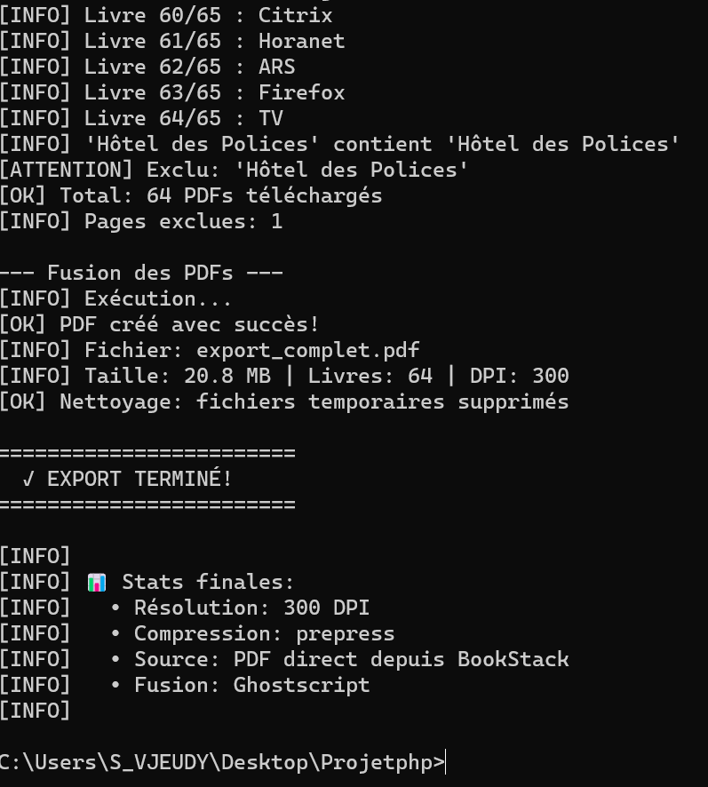
Une fois terminé, le script fusionne les fichiers et supprime le dossier temporaire pour générer un seul PDF.
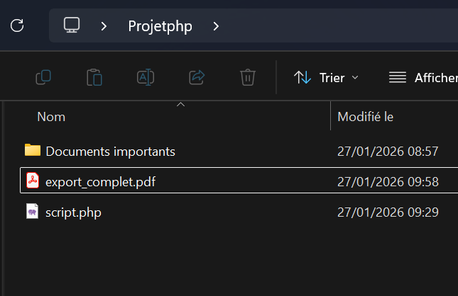
Les informations de la base de connaissances sont regroupées dans un seul fichier pour l’IA.
Connexion du PDF à Delibia et observation des résultats :
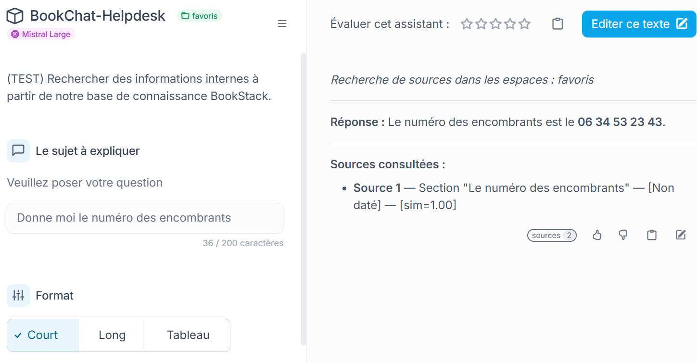
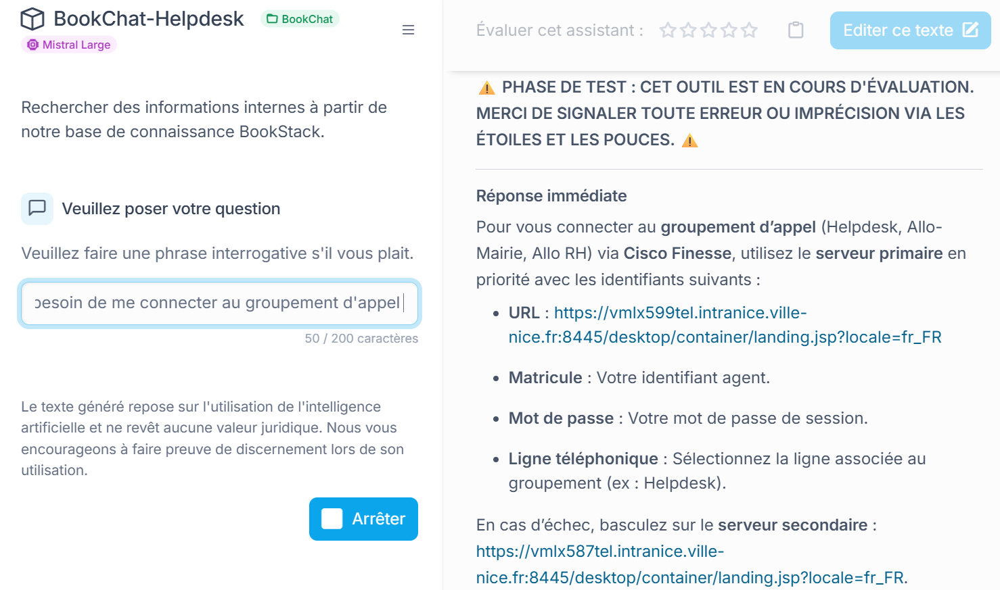
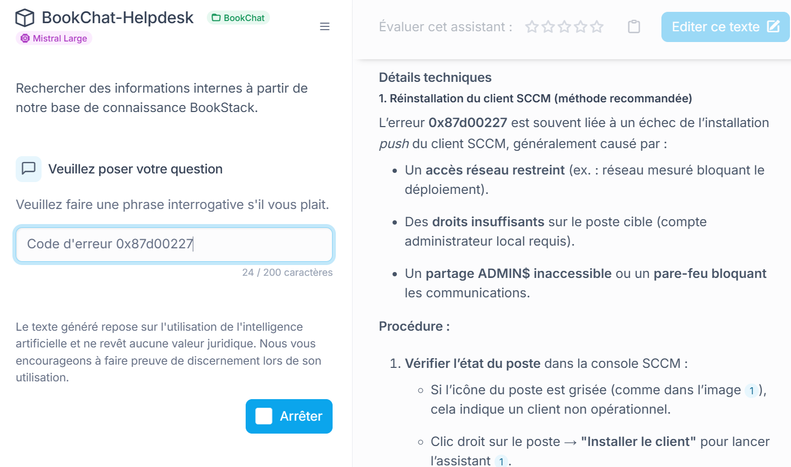
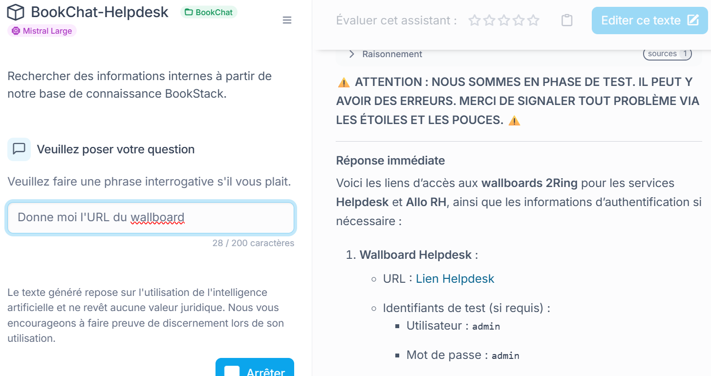
On voit que l’IA comprend le PDF et fournit des réponses pertinentes.